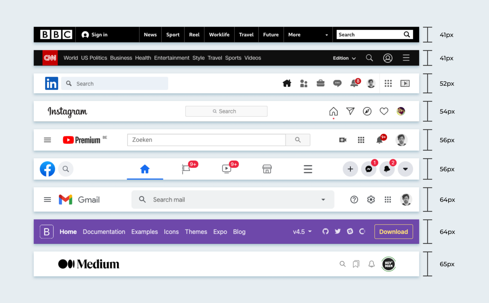

Çoğu tasarımcı web sayfalarının en üstünde yatay bir menü çubuğu kullanır. Bu menüyü Css kullanarak istediğimiz görünümde hazırlayabiliriz. Ancak web sayfamızda istediğimiz esneklik ve mobil uyumluluğu sağlamak konusunda zorlanabiliriz. BootStrap'ın belki de bizlere sağladığı en önemli kolaylık navbar class'ıdır diyebiliriz.
Adını "Navigation Bar" ifadesinin kısaltılmasından alan bu css sınıfını kullanarak kolayca yatay bir menü oluşturabilir, içerisine buton, link veya açılır menü şeklinde elemanlar yerleştirebiliriz.
En önemlisi ise bu menü o anki ekran genişliğine otomatik uyum sağlayacak, istenirse xs ekranlarda açılır menü (collapse özelliği ile) haline gelecektir.
Bootstrap4 menü çubuğu(navbar) site içindeki sayfalar arasındaki gezinmeyi sağlarlar. Her ne kadar gezinme işlemi dropdown kullanılarak yapılsa da navbar görsel açıdan çok daha uygundur.
Ayrıca navbar sahip olduğu collapse işlemi küçük ekran boyutlarında çok farklı bir menü görünümü ortaya sunar. Bootstrap'ın ilk çıktığı günden beri kullanıcıların en çok beğendiği özelliği de bu collapsible(kapanıp açılabilir) menüsü olmuştur.
Bootstrap yeni sürümüyle beraber navbar yapısında da bazı değişiklikler olmuştur. Önceki sürümlerinde tüm menüler ul ve li elemanlarından oluşan listeler ile hazırlanırken, bu sürümünde açılır menüler div elemanları kullanılarak hazırlanmıştır. Bu da back-end kodlar kullanılarak menü yapımında sorunlara yol açabilir.
